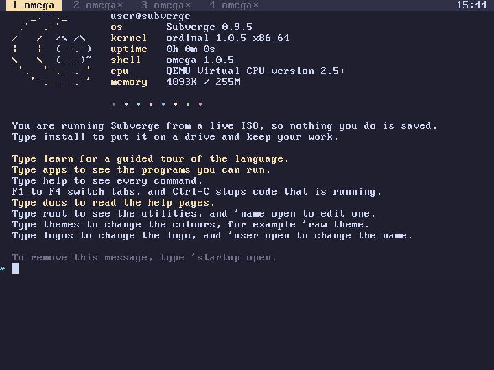
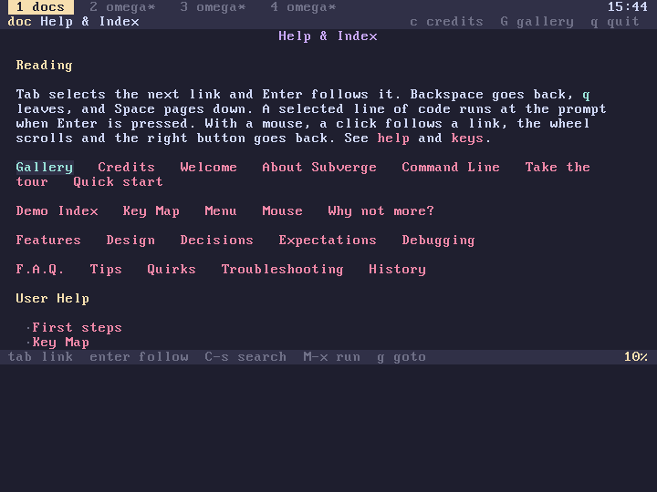
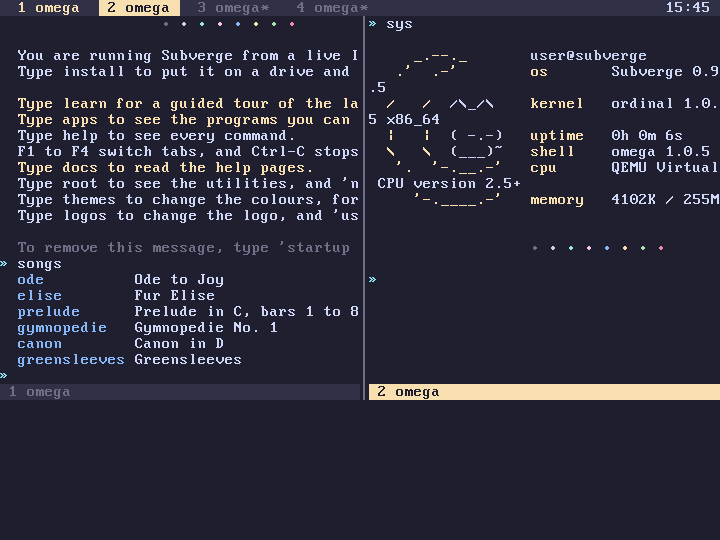
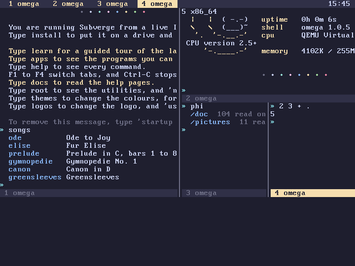
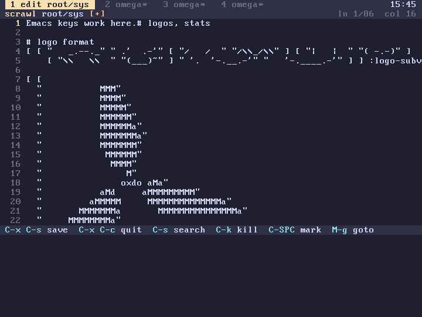
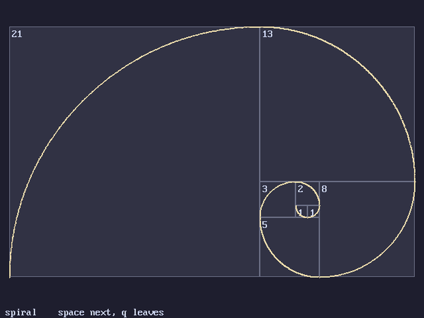
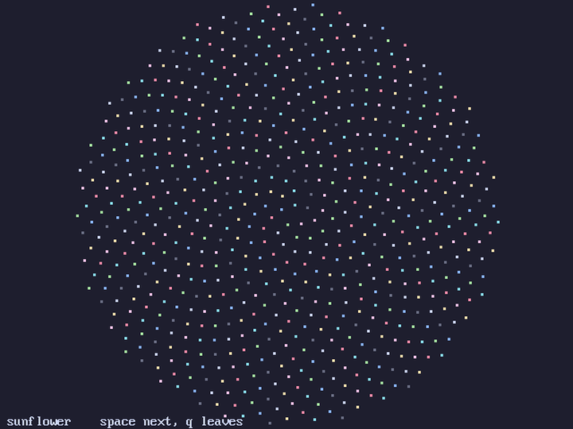
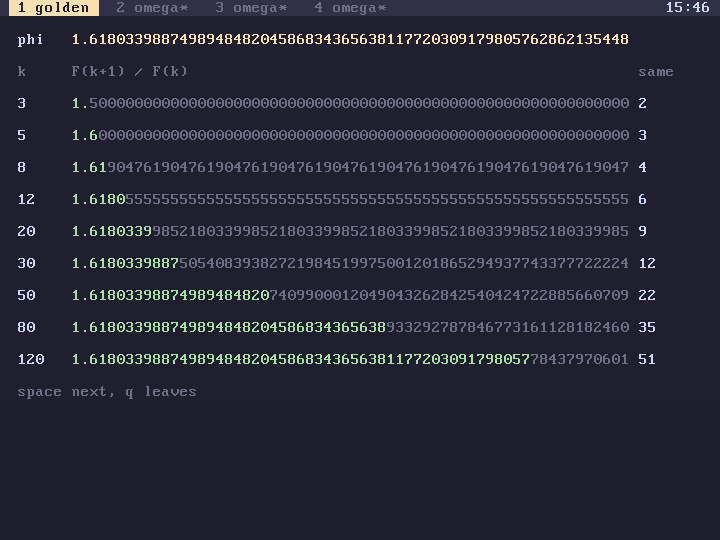

subverge
subvergeGallery
Screenshots of Subverge 0.9.6. The same pictures are in the system: gallery shows them after the photographs, and pictures lists their names. See the credits for the people and the photographs.

The first screen after boot.

The help pages, with the credits and the gallery at the top.

Every key binding, opened with C-h b.

M-x completing the name of a word.

Two windows, side by side.

Four windows, laid out like a tiling window manager.

scrawl with the Emacs keys.

dired, browsing the pictures in phi.

golden, the spiral.

golden, the sunflower.

golden, the digits.